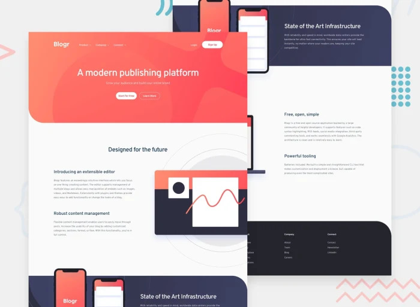
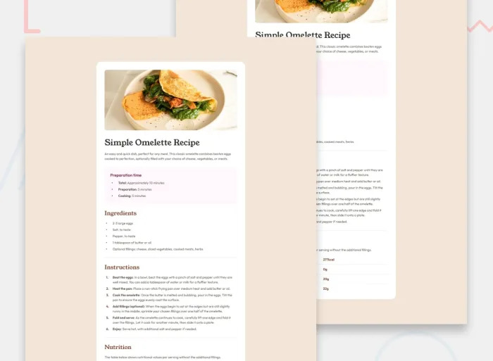
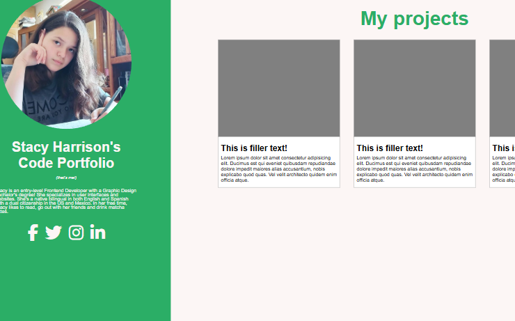

My projects

Blogr Landing Page
This is a simple landing page challenge from Frontend Mentor I did with HTML and CSS. The hamburger menu isn't interactive yet for the lack of JavaScript but I'm on it ;P My biggest challenge with this one was the placement of the images in the original design. Get your shit together Graphic Designers.

Simple Recipe Page
This is a simple recipe page I made as a challenge from Frontend Mentor using basic HTML and CSS. It was one of my first projects!

My Portfolio
This is where I store all my up-to-date coded websites using HTML, CSS and JavaScript